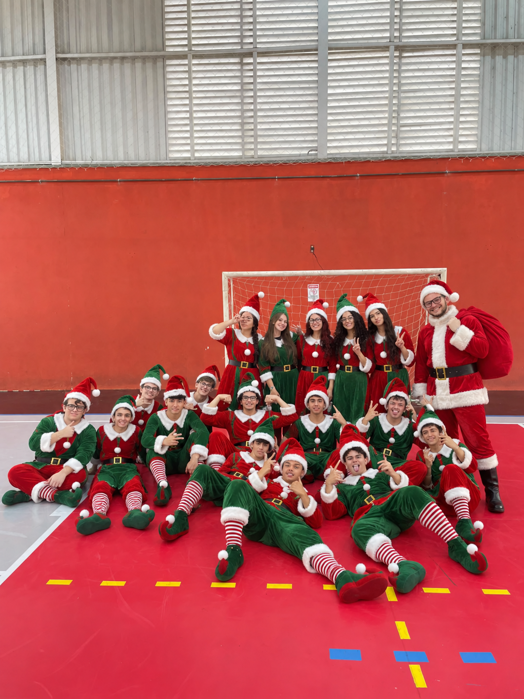

Magia
O encanto das festas: luzes nas janelas, cheiro de ceia e a sensação de que tudo pode acontecer.
Um cantinho para celebrar a magia das luzes, a alegria de estar entre amigos e aquele espírito natalino que deixa tudo mais leve.
Entrar na Fábrica dos SonhosO encanto das festas: luzes nas janelas, cheiro de ceia e a sensação de que tudo pode acontecer.
As pessoas que tornam o Natal especial: quem divide a mesa, a risada e as histórias do ano.
Desejos e planos para o futuro: o que queremos levar, aprender e construir no próximo ano.
Lá no alto de uma montanha nevada, onde o vento assobia canções de Natal, fica uma fábrica que nunca dorme em dezembro. Ali, cada desejo vira projeto, cada carta ganha resposta e cada dia até a noite de Natal guarda uma pequena surpresa.
Martelinhos, papel de presente e fitas por todo lado. Aqui os desejos ganham forma, um embrulho de cada vez.
Milhares de cartas chegam todo ano. Algumas pedem brinquedos; as melhores pedem paz, saúde e mais tempo com quem a gente gosta.
Cada dia de dezembro tem uma janelinha nova para abrir. A fábrica inteira conta os dias até a grande noite.
